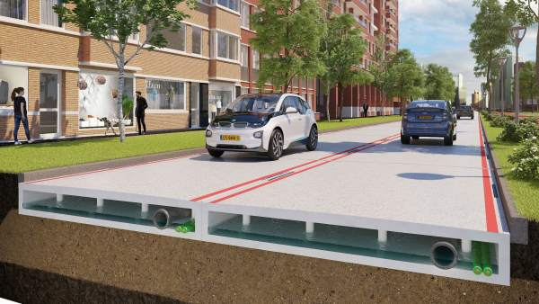
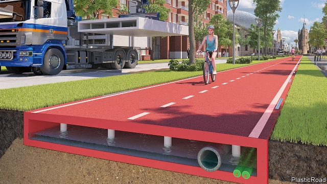
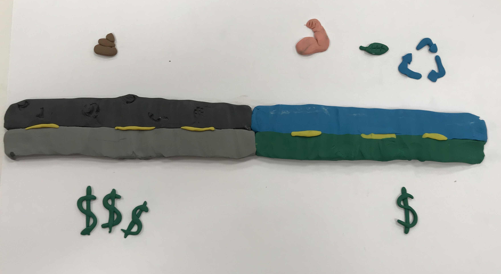

Our solution
Our solution for the bad shape of public roads in Mexico is to bring scottish technology for making roads with recicled plastic instead of petroleum, that is used right now in all the asphalt roads, making it a greener alternative, a less expensive one, because the petrolium is harder to obtain than to recicle plastic. This solution is to make pieces of road with a space in the middle for the pipelines, making less expensive to change them and quicker than now. To make this technology to enter the mexican market we will import the materials used for the roads and the machines to make them and the idea is to sell the roads to the government, this solution is not aviliable here because of the big invertion needed.
The problem reviewed in this web page impacts to every person who uses a car to go from one point of the city to another. Our solution have an impact on the users of public roads in the Metropolitan Guadalajara Zone, but just in the main roads, because the government don't give enogh money for private projects.
Expert feedback
There is already background of the use of recycled material in other countries. Even it is used to install solar panels that light up the separation lines between two lanes. It is necessary that you offer the needed studies to determine the solution characteristics, layer thicknesses, taking into account the axes and the load of trafic on the road in one hour.
Ya hay antecedentes del uso de material reciclado en otros países. Incluso se aprovecha para instalar paneles solares que iluminan las líneas separadoras de carriles. Hace falta ofrecer los estudios necesarios para determinar las características de la solución, espesores de la capa, etc. contando los ejes y la carga que pasa por una vialidad en una hora.
User feedback
The project is born out of good intent but it needs a projection of the costs and a way to finance it. Not only the government, but commercial assosiates that could afford the new pavement proccess that you guys are offering. There also needs to be an offer to make this proposal more appealing to private investors. Also I find it very limiting to urban areas and main roads, the urbanization process must contemplate a big part of the streets in the city and should also take into consideration the rural areas or smaller cities to make this project more global.
El proyecto nace de una buena intención, pero necesita una proyección de costos, y la manera de financiarlo. No solo el gobierno, no veo involucrados a asociados comerciales, que pudieran costear la pavimentación como ustedes proponen, ni tampoco veo como ustedes harían ofertas para hacerlo atractivo a la inversión privada. De antemano me parece limitado que solo sea a las rúas principales, los proyectos de urbanización y reorganización urbana deben contemplar la mayor parte de las ciudades a fin de que el impacto sea global.
Prototype


First version

Check out our page analytics at this PDF file. Give it a click if you like.
Check out our report of UsuabilityHub at this PDF file. Give it a click if you like.